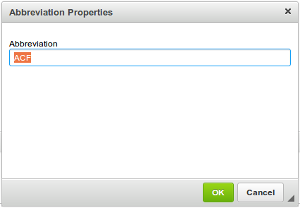
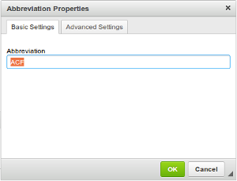
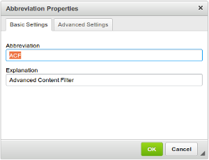

Integrating Plugins with Advanced Content Filter
Integrating Plugins with Advanced Content Filter
Advanced Content Filter was introduced in CKEditor 4.1.
CKEditor consists of a number of editor features like
commands, buttons, drop-down lists, or dialog windows. The role of plugins is
to extend the set of available features. However, since the introduction of
Advanced Content Filter,
features, and the content they generate, are subject to filtering.
The introduction of Advanced Content Filter (ACF) have impacted the plugin
development process and slightly changed the data processing model of CKEditor.
With Advanced Content Filter plugins can take control over the content available
in the editor and adaptively adjust the user interface when allowed content changes.
Of all the feature properties the following are crucial for correct plugin integration
with ACF:
property-allowedContent– determines the type of
content that is allowed by the feature to enter the editor. In most cases
this is the content that this feature generates.property-requiredContent– defines a minimal
set of content types that must be enabled to let the feature work.property-contentForms– defines markup transformations
for code consistency and correctness.
This guide is based on the Simple Plugin (Part 2)
tutorial and explains all code adjustments that are required to make it compatible with
Advanced Content Filter.
You can download the entire plugin folder used in the Simple Plugin (Part 2) tutorial to follow the changes introduced in this guide.
# Integrating with ACF to Introduce a New Content Type
If you start with the code created for Simple Plugin (Part 2)
but without specifying the allowedContent or
requiredContent options you may notice
that the plugin is working, however, incoming abbreviations are filtered out as soon as possible.
Try setting this HTML code in source mode and switch back to WYSIWYG view (you may need to do
this twice) to see that the <abbr> tag is gone:
<p>What is <abbr title="Advanced Content Filter">ACF</abbr>?</p>
Why is it so? The editor does not know that since the Abbreviation feature is enabled (the button
is added to the toolbar), it should accept the <abbr> tag as allowed content. Without
allowedContent property specified,
<abbr> tags will always be discarded and the button itself will not guarantee that the feature is
actually useable for the end-user.
To add the <abbr> tag to the editor contents in a correct and automatic way, you need to
extend the abbrDialog command definition when calling the
CKEDITOR.dialogCommand constructor:
new CKEDITOR.dialogCommand( 'abbrDialog', {
allowedContent: 'abbr'
} );
Try inserting the test HTML code again and check what happens when you switch between
the source and WYSIWYG modes. This is what you will see:
<p>What is <abbr>ACF</abbr>?</p>
But where is the title attribute? It was removed by the editor. And the same would happen to the
id attribute that is supported by the Advanced Settings tab.
In order to avoid this, you will have to specify which attributes are allowed,
too. This was not done when setting allowedContent above, so will have to be fixed now:
new CKEDITOR.dialogCommand( 'abbrDialog', {
allowedContent: 'abbr[title,id]'
} );
The title and id attributes will now be accepted for any <abbr> tag. Loading the Abbreviation button
will automatically extend filtering rules to accept a new content type and let
the new feature work as planned.
# What is an Editor Feature?
What does it mean that “a feature is enabled”? Why did we define the
allowedContent property
for the Abbreviation command definition and not for the button or the
entire plugin?
The first thing to keep in mind is that one plugin can introduce multiple features.
For example the basicstyles plugin adds numerous buttons and each one
constitutes a single feature. So it looks like a button is more likely to be a feature.
However, in most cases a button just triggers a command — for example the
Abbreviation button has a related abbrDialog command. This command
may also be triggered by a keystroke (see keystrokes)
or directly from code (by execCommand). Therefore,
usually a command is the “root” of a feature. Please note that this is not always
the case — for example the Format drop-down list does not have a related
command, so the allowedContent property
is defined directly for it.
The most typical way of enabling a feature is by adding its button to the
toolbar. The editor handles features activated in this way automatically, and:
- It checks if a button has the
allowedContent property
(is a feature itself). If yes, then its allowed content rule is registered in
thefilterwhich is responsible for all main ACF functions. - If a button is not a feature itself, but has a related command, then that
command is registered as a feature.
If you need to register a feature manually from your plugin, you can use
the addFeature method. It accepts
an object implementing the feature interface.
Refer to the API documentation for more details.
# Integrating with ACF to Activate Editor Features
Once the editor was configured to work with the new content type,
it is a good moment to check what would happen if the Abbreviation plugin
was enabled, but the allowedContent option deliberately omitted the
<abbr> tag:
CKEDITOR.replace( 'editor1', {
extraPlugins: 'abbr',
allowedContent: 'p' // Only paragraphs will be accepted.
});
You may notice that many features like formatting buttons, text alignment, and
many others are gone. The content that they produce (<strong>, text-align, etc.)
is simply invalid within this configuration environment.
This is not the case with the Abbreviation button which shows up, but in fact no longer
makes any sense because the user configuration overwrites any rules
automatically added by this feature.
By specifying the requiredContent property
in the command definition we make sure that the Abbreviation button will adaptively
adjust to filtering rules set by the user:
new CKEDITOR.dialogCommand( 'abbrDialog', {
allowedContent: 'abbr[title,id]',
requiredContent: 'abbr'
} );
The requiredContent: 'abbr' rule means that the Abbreviation button requires
the <abbr> tag to be enabled to work. Otherwise, the feature will be disabled.
This makes sense because inserting and managing abbreviations in an editor that
discards this kind of content is pointless.
Let us consider another configuration setting that brings our plugin back to life by
accepting <abbr> back again:
CKEDITOR.replace( 'editor1', {
extraPlugins: 'abbr',
allowedContent: 'p abbr'
});
The allowedContent: 'p abbr' rule means that all attributes will be striped out from
the <abbr> tag, including title and id. The Abbreviation plugin, however, still provides
a dialog window for editing both abbreviations (tag contents) and explanations (title) as
well as the Advanced Settings tab for setting the id. It turns out that the Explanation
field and the second tab are no longer necessary since the title and id attributes will
be discarded.
With Advanced Content Filter we can specify which dialog window fields and tabs are
enabled and which are not, depending on filtering rules set in the configuration. This can
be done by modifying the Explanation field in the dialog window definition
(plugins/abbr/dialogs/abbr.js):
elements: [
...
{
type: 'text',
id: 'title',
label: 'Explanation',
requiredContent: 'abbr[title]', // Title must be allowed to enable this field.
...
}
...
]
The dialog window also contains the Advanced Settings tab that
can be used for setting the id attribute. However, our current configuration
(allowedContent: 'p abbr') means: “only paragraphs and abbreviations are allowed, not
attributes”. The Abbreviation plugin should take this fact into account and disable
the Advanced Settings tab unless the id attribute is allowed:
contents: [
...
{
id: 'tab-adv',
label: 'Advanced Settings',
requiredContent: 'abbr[id]', // ID must be allowed to enable this field.
elements: [
...
]
}
...
]
To sum it up, let us see how the Abbreviation dialog window changes with different
config.allowedContent settings:
allowedContent = 'p abbr' |
allowedContent = 'p abbr[id]' |
allowedContent = 'p abbr[title,id]' |
|---|---|---|
|  |  |  |
# Integrating with ACF for Content Transformations
Advanced Content Filter also introduces
content transformations
that help clean up HTML code and make it consistent. This functionality can be
used automatically in the Abbreviation feature to convert the invalid <acronym>
tag into an <abbr>. In order to achieve this, we will need to define the
property-contentForms property that determines which tag
is correct and accepted by the editor with the highest priority:
new CKEDITOR.dialogCommand( 'abbrDialog', {
allowedContent: 'abbr[title,id]',
requiredContent: 'abbr',
contentForms: [
'abbr',
'acronym'
]
} );
This configuration causes the following code transformation:
// HTML before
<p>What is <acronym title="Advanced Content Filter">ACF</acronym>?</p>
// HTML after
<p>What is <abbr title="Advanced Content Filter">ACF</abbr>?</p>
The editor will automatically convert <acronym> tags into <abbr> tags when
pasting content and editing source code.
Read more about contentForms in CKEditor JavaScript API.
You can also download the entire modified plugin folder inluding the icon and the fully commented source code.
# Abbreviation Plugin Demo
See the working “Abbreviation (Custom Plugin with Dialog, Context Menu and ACF Support)” sample that shows the final version of the Abbreviation plugin integrated with an editor instance.
# Further Reading
Refer to the following resources for more information about creating CKEditor plugins:
- Creating a CKEditor Plugin in 20 Lines of Code – Create your first CKEditor plugin that inserts a piece of HTML code into the document.
- Simple Plugin, Part 1 – Develop a basic Abbreviation plugin with a dialog window that lets the user insert a an abbreviation element into the document.
- Simple Plugin, Part 2 – Modify the Abbreviation plugin by adding a custom context menu and abbreviation editing capabilities.
- Plugin Stylesheets – Tips on how to integrate custom plugin stylesheets with CKEditor.
Refer to the following resources for more information about content filtering:
- The Content Filtering (ACF) article explains some ACF use cases and the rationale behind this feature.
- The Advanced Content Filer article contains more in-depth technical details about ACF.
- The Allowed Content Rules article explains the allowed and disallowed content rules format.
- The Disallowed Content article explains how blacklisting works in ACF.
- CKEDITOR.filter contains API documentation for the main class responsible for ACF features.
- CKEDITOR.feature contains API documentation of an interface representing an editor feature used in combination with CKEDITOR.filter.addFeature